La Génétique Mendelienne
Le but de ce chapitre c’est d’étudier des différentes types de la génétique qui existe dans le terre et pour traiter un exercice de la génétique Mendel il faut suivez des fois les professeur mais aussi il faut pas trop réfléchir si non vous risquez tomber dans certaines piège, à chaque moment si on commence à étudier ou traiter un exercice la plus part la première question elle sert tjrs à analyser et pour analyser est plus facile comme bonjour l’essentiel c’est ce qui va compliquer tous c’est les types de croisement et ici vous aurez tous les types possibles mais d’abord les définitions.
+ Notion fondamentale :
- La génétique : Est la science qui s’occupe à l’étude de la transmission des caractères héréditaire d’une génération a l’autre.
- Le caractère : Est une variable qualitative comme (couleur, taille, forme et aspect etc…), dans le cas germinale chaque caractère est contrôlé par une seul gène.
- Le gène : Est une portion d’ADN qui s’occupe à un emplacement précis sur le chromosome (locus) est contrôlé par la synthèse d’une protéine.
+ Si le gène est porté par un autosome donc la transmission peut être autosomique et peut être influencé par le sexe.
+ Si le gène est porté par un gonosome (X ou Y) alors la transmission est dite gonosomique (lié au sexe).
- Le caractère DOMINANT : Est le caractère parental qui apparait en 1ère génération F1, on le note par une grande lettre.
- Le caractère RECESSIF : Est le caractère parental qui disparait en 1ère génération F1 et apparait à la 2éme génération F2, on le note par une petite lettre.
- Le caractère CODOMINANTE : Sont deux caractères qui donne en F1 un aspect non parental, on les notes par des grandes lettres.
- Monohybridisme : C’est l’étude d’un seul caractère.
- Dihybridisme : C’est l’étude de deux caractère.
- Polyhybridisme : C’est l’étude de plusieurs caractères.
- Le génotype : C’est la composition allélique de l’individu et la structure invisible de l’être vivant, dans le cas générale chaque caractère est contrôlé par un seul gène qui est représenté par deux allèles, les deux allèles peuvent être identiques ou différentes.
Un caractère = Un gène = Deux allèles
- Le phénotype : C’est l’apparence de l’individu, c’est-à-dire la structure visible de l’être vivant phénotypiquement chaque caractère est représenté par une seule allèle sauf le cas de Codominant dans ce cas le phénotype est celui du génotype.
- La lignée pure (Race pure ou homozygote) : C’est la lignée qui n’accepte pas l’apparition d’un nouveau caractère si elle est Auto-fécondée, ces allèles sont identiques et produit un seul type de gamète Homogamétique.
- La lignée hybride (hétérozygote) : C’est la lignée qui accepte l’apparition d’un nouvel individu au moment de l’auto-fécondation, elle se compose de plusieurs allèles différentes et produits plusieurs types de gamètes.
- Test-cross (Le croisement teste) : C’est le croisement d’un individu avec des caractères dominant avec un individu récessif pour déterminer les génotypes des individus dominants. Si la descendance de cette croisement montre un phénotype unique donc l’individu testé est Homozygote. Si la descendance montre deux types de phénotypes différentes ½ ½ donc l’individu testé est Hétérozygote.
Le Back-cross (Le croisement retour) : C’est le croisement d’un individu de F1 avec l’un de ces parent, si la descendance montre un phénotype unique donc les parents croisé avec la F1 sont Dominant, si la descendance de la croisement montre deux différents phénotype de ½ ½ alors les parents sont Récessif.
+ Les lois de Mendel :
- La 1ére Loi de Mendel : Uniformité de l’hybride de F1.
Si la 1ére loi de Mendel est vérifiée (la descendance est homogène) les individus croisés sont des races pures.
Si elle est non vérifiée (la descendance est hétérogène) les individus croisés sont des hybrides l’un des deux.
- La 2éme Loi de Mendel : la disjonction des allèles (le gamète porté un seul allèle de chaque gène).
- La 3éme Loi de Mendel : La ségrégation indépendante des gènes (des caractères).
+ Etudes de tous les cas possibles :
N.B :
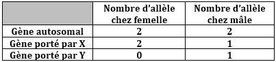
- Cas 1 : Gène autosome
Exemple de génotype :

- Types de gamètes :
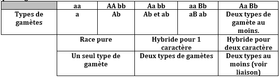
- Cas de Test-cross :
- Cas de Back-cross :
N.B : dans ce cas de Dihybridisme on utilise le Test-cross ou le Back-cross pour déterminer le nombre des gamètes formé par l’individu hybride est dans quelle proportion.
- Cas de Monohybridisme (gène porté par un autosome et dominant) :
Expérience: On croise deux drosophiles l’une a corps gris et l’autre a corps noir. On obtient en F1 tous les drosophiles ont des corps gris.
1 - Analyser ce résultat ?
2 - Les croisement des individus F1 donne en F2 :
+ 210 des drosophiles à corps gris.
+ 70 des drosophiles à corps noir.
Suivez la méthode de répondre aux questions :
Solution :
1 - Un seul caractère est étudié (le couleur) : il s’agit de Monohybridisme.
- F1 Est Homogène (corps gris).
- Les parents sont des races pures.
- Gris domine noir G>g
- Le croisement : vérifie le 1ére Loi de Mendel
Pour répondre à la deuxième question il faut faire le croisement total avec l’échiquier pour vérifier les proportions.
2 - Deuxième croisement avec l’échiquier de croisement est celui qui est dans le tableau :
et c’est tous pas d’aller plus loin maintenant aux essentiels :
Remarque :
• En gros :
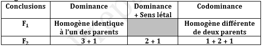
- Cas de Gène influencée par le sexe : c’est un gène dont l’un des allèles est dominant chez le mâle récessif chez la femelle G1 → A et B tel que A est dominé chez le mâle et récessif chez la femelle. Ce gène est caractérisé par un seul caractère :
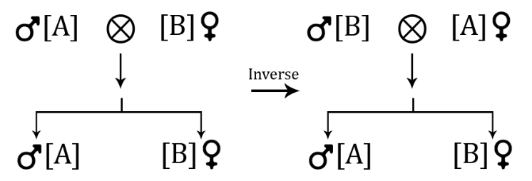
- Chez les bovins :
L’allèle responsable des cornes (D) domine Chez le mâle.
D : cornes ; S : Absence des cornes
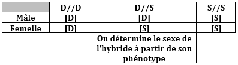
- Cas des Abeilles :
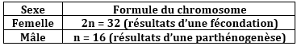
Dans une cellule haploïde (mâle d’abeille) le gène est représenté par un seul allèle. On croise deux races pures d’abeilles :
Mâle de couleur argent et Femelle de couleur noir on obtient en F1 mâle de couleur noir et Femelle de couleur intermédiaire.
1 - Expliquez le résultat ?
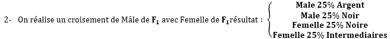
3 - Interprétez ?
Solution :
1 - Un seul caractère est étudié : il s’agit de Monohybridisme les Femelles de F1 sont des hybride ont des couleurs intermédiaires, Il y’a Codominance (Dominance Intermédiaire), entre le Noir et l’Argent : on note
Noir : N et Argent : A
D’où les croisements : elle confirme la 1ére Loi de Mendel.
2.a- Le 2éme croisement :
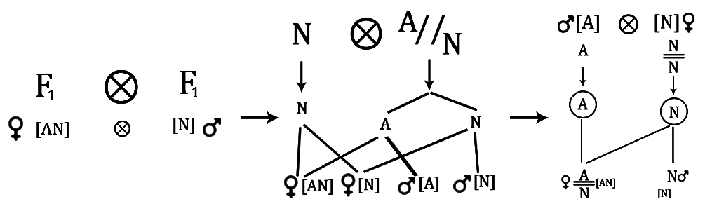
Conformes aux résultats expérimentaux
- Cas de gêne Gonosome :
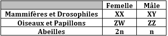
Le gène est porté par X : si l’un des critères existe lors du croisement ou dans l’exercice.
- 1ére critère : Le croisement est un croisement inverse ou l’une de F1 est différente.
- 2éme critère : Les mâles de F1 différencie de ces femelles ou les mâle identique à leur mère, on détermine la dominance à partir du phénotype des femelles de F1.
- 3éme critère : La diversité des mâles de F1 au moins on détermine la dominance à partir du phénotype de la mère.
Remarque : On peut déterminer aussi le sexe de l’individu à partir de son phénotype s’il ne porte pas le phénotype dominant.
- Cas de Dihybridisme : G1 → A⁄a et G2 → B⁄b
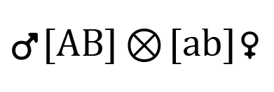
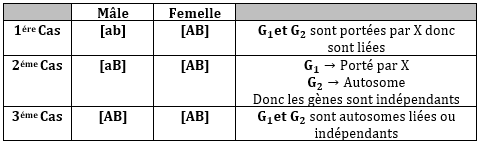
- Cas de deux gènes autosomes :
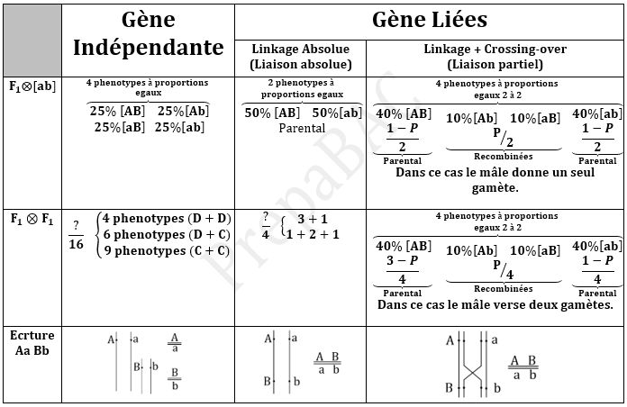
- Carte Factorielle :
Pour déterminer la carte factorielle d’un autre gène qui se localise avec les autres gènes étudier il faut d’abord calculer le pourcentage des recombinées car il s’agit de la distance entre les gènes et ce cas est utilisé si est seulement si les gènes sont liés, ce qui implique que 1% = 1cM avec (cM : centi-Morgan).
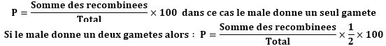
- Emplacement :
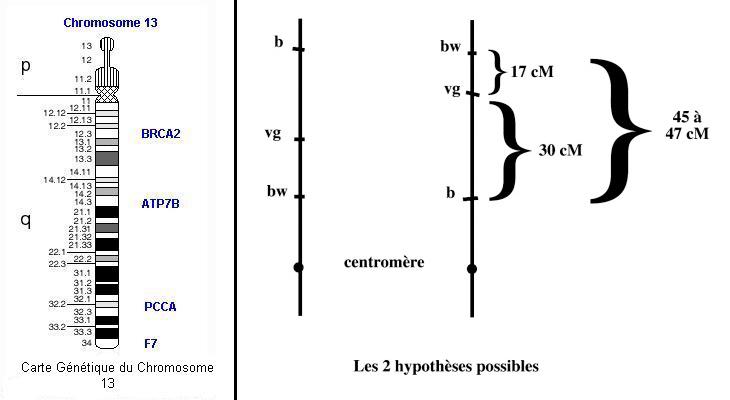
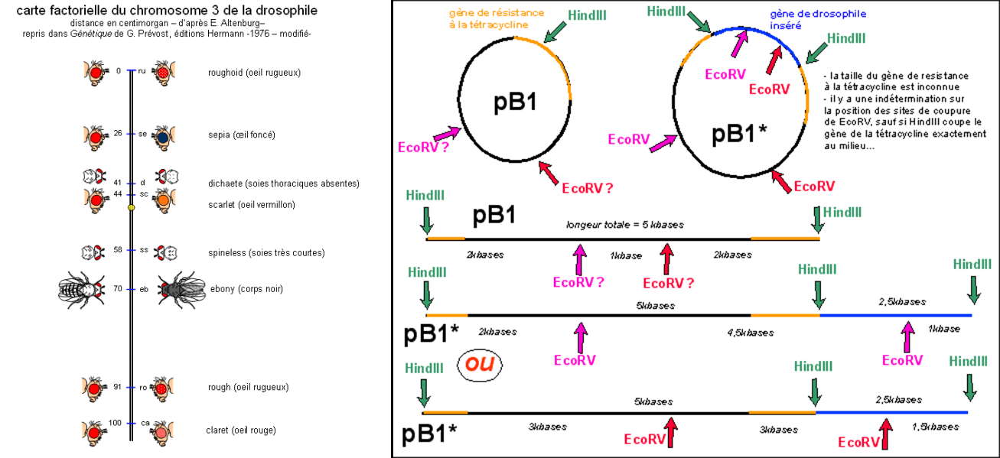